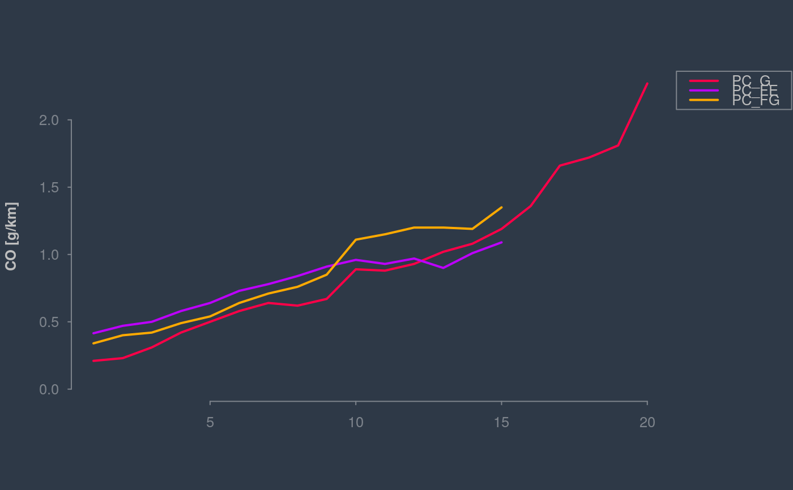
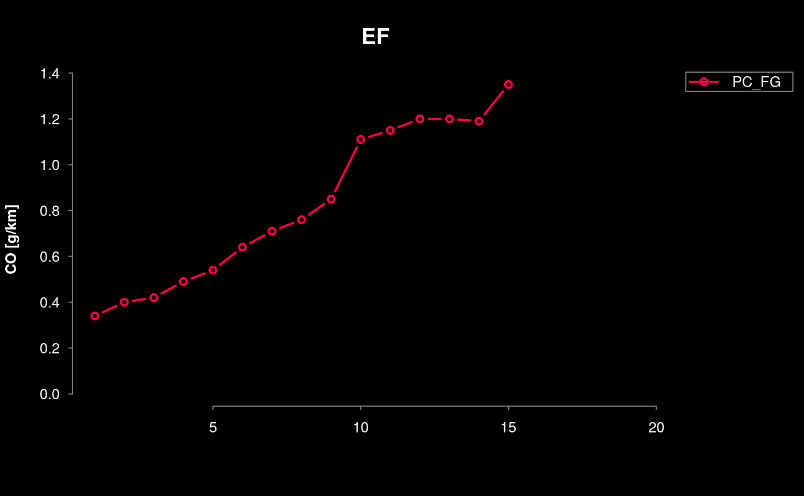
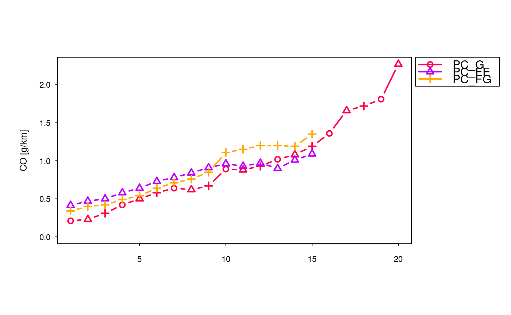

colplot plots columns of data.frame
colplot( df, cols = names(df), xlab = "", ylab = "", main = NULL, theme = "black", col = cptcity::cpt(pal = cptcity::find_cpt("pastel")[4], n = length(names(df))), type = "b", lwd = 2, pch = 1:ncol(df), familyfont = "", spl = 5, all_values = FALSE )
| df | data.frame. |
|---|---|
| cols | Character, columns of data.frame. |
| xlab | a label for the x axis, defaults to a description of x. |
| ylab | a label for the x axis, defaults to a description of x. |
| main | Character, a main title for the plot, see also |
| theme | Character; "black", "dark", "clean", "ink" |
| col | The colors for lines and points. Multiple colors can be specified so that each point can be given its own color. If there are fewer colors than points they are recycled in the standard fashion. Default are cptcity colour palette "kst_18_pastels" |
| type | 1-character string giving the type of plot desired. The following values are possible, for details, see plot: "p" for points, "l" for lines, "b" for both points and lines, "c" for empty points joined by lines, "o" for overplotted points and lines, "s" and "S" for stair steps and "h" for histogram-like vertical lines. Finally, "n" does not produce any points or lines. |
| lwd | a vector of line widths, see |
| pch | plotting ‘character’, i.e., symbol to use. This can either be a single character or an integer code for one of a set of graphics symbols. The full set of S symbols is available with pch = 0:18, see the examples below. (NB: R uses circles instead of the octagons used in S.). Value pch = "." (equivalently pch = 46) is handled specially. It is a rectangle of side 0.01 inch (scaled by cex). In addition, if cex = 1 (the default), each side is at least one pixel (1/72 inch on the pdf, postscript and xfig devices). For other text symbols, cex = 1 corresponds to the default fontsize of the device, often specified by an argument pointsize. For pch in 0:25 the default size is about 75 the character height (see par("cin")). |
| familyfont | "Character" to specify font, default is"", options "serif", "sans", "mono" or more according device |
| spl | numer to control space for legend, default is 5. |
| all_values | logical, if FALSe shows only positive > 0 values |
a nice plot
This plot shows values > 0 by default. To plot all values, use all_values = TRUE
{ a <- ef_cetesb("CO", c("PC_G", "PC_FE", "PC_FG"), agemax = 20) colplot(df = a, ylab = "CO [g/km]", theme = "dark", pch = NULL, type = "l") colplot(df = a, cols = "PC_FG", main = "EF", ylab = "CO [g/km]") colplot(df = a, ylab = "CO [g/km]", theme = "clean") }